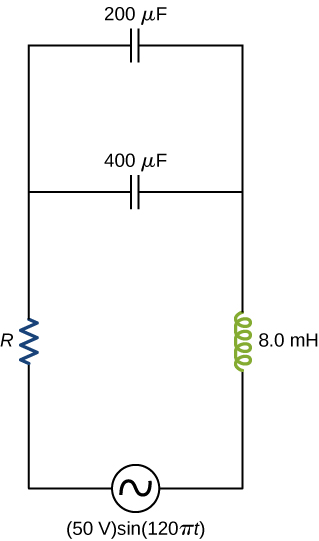
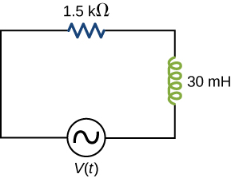
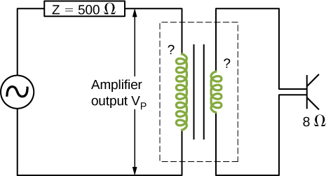
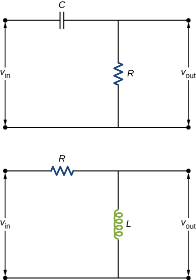
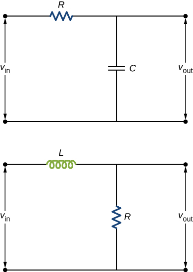

![Figure shows a soft iron core in the center. This is in the form of a rectangular ring. There are windings on its left arm, connected to a voltage source. These are labeled N subscript p turns. The current through them is i subscript p parentheses t parentheses. The voltage across two ends of the windings is v subscript p parentheses t parentheses. The windings on the right arm of the core are connected to a resistor R subscript s. The windings are labeled N subscript s turns. These are more in number than the windings on the left arm. The current in the right circuit is i subscript s parentheses t parentheses. The voltage across the windings is v subscript s parentheses t parentheses. The current in the left circuit flows into the windings from the top. The current in the right circuit flows out of the winding from the top.](CNX_UPhysics_32_06_Transformr.jpg)
By the end of this section, you will be able to:
Although ac electric power is produced at relatively low voltages, it is sent through transmission lines at very high voltages (as high as 500 kV). The same power can be transmitted at different voltages because power is the product (For simplicity, we ignore the phase factor A particular power requirement can therefore be met with a low voltage and a high current or with a high voltage and a low current. The advantage of the high-voltage/low-current choice is that it results in lower ohmic losses in the transmission lines, which can be significant in lines that are many kilometers long ([link]).
Typically, the alternating emfs produced at power plants are “stepped up” to very high voltages before being transmitted through power lines; then, they must be “stepped down” to relatively safe values (110 or 220 V rms) before they are introduced into homes. The device that transforms voltages from one value to another using induction is the transformer ([link]).
As [link] illustrates, a transformer basically consists of two separated coils, or windings, wrapped around a soft iron core. The primary winding has loops, or turns, and is connected to an alternating voltage The secondary winding has turns and is connected to a load resistor We assume the ideal case for which all magnetic field lines are confined to the core so that the same magnetic flux permeates each turn of both the primary and the secondary windings. We also neglect energy losses to magnetic hysteresis, to ohmic heating in the windings, and to ohmic heating of the induced eddy currents in the core. A good transformer can have losses as low as 1% of the transmitted power, so this is not a bad assumption.
To analyze the transformer circuit, we first consider the primary winding. The input voltage is equal to the potential difference induced across the primary winding. From Faraday’s law, the induced potential difference is where is the flux through one turn of the primary winding. Thus,
Similarly, the output voltage delivered to the load resistor must equal the potential difference induced across the secondary winding. Since the transformer is ideal, the flux through every turn of the secondary winding is also and
Combining the last two equations, we have
Hence, with appropriate values for the input voltage may be “stepped up” or “stepped down” () to the output voltage. This is often abbreviated as the transformer equation,
which shows that the ratio of the secondary to primary voltages in a transformer equals the ratio of the number of turns in their windings. For a step-up transformer, which increases voltage and decreases current, this ratio is greater than one; for a step-down transformer, which decreases voltage and increases current, this ratio is less than one.
From the law of energy conservation, the power introduced at any instant by to the primary winding must be equal to the power dissipated in the resistor of the secondary circuit; thus,
When combined with [link], this gives
If the voltage is stepped up, the current is stepped down, and vice versa.
Finally, we can use , along with [link] and [link], to obtain
which tells us that the input voltage “sees” not a resistance but rather a resistance
Our analysis has been based on instantaneous values of voltage and current. However, the resulting equations are not limited to instantaneous values; they hold also for maximum and rms values.
A Step-Down Transformer A transformer on a utility pole steps the rms voltage down from 12 kV to 240 V. (a) What is the ratio of the number of secondary turns to the number of primary turns? (b) If the input current to the transformer is 2.0 A, what is the output current? (c) Determine the power loss in the transmission line.
Strategy The number of turns related to the voltages is found from [link]. The output current is calculated using [link].
Solution
Significance This application of a step-down transformer allows a home that uses 240-V outlets to have 100 A available to draw upon. This can power many devices in the home.
Check Your Understanding A transformer steps the line voltage down from 110 to 9.0 V so that a current of 0.50 A can be delivered to a doorbell. (a) What is the ratio of the number of turns in the primary and secondary windings? (b) What is the current in the primary winding? (c) What is the resistance seen by the 110-V source?
a. 12:1; b. 0.042 A; c.
| AC voltage | |
| AC current | |
| capacitive reactance | |
| rms voltage | |
| rms current | |
| inductive reactance | |
| Phase angle of an RLC series circuit | |
| AC version of Ohm’s law | |
| Impedance of an RLC series circuit | |
| Average power associated with a circuit element | |
| Average power dissipated by a resistor | |
| Resonant angular frequency of a circuit | |
| Quality factor of a circuit | |
| Quality factor of a circuit in terms of the circuit parameters | |
| Transformer equation with voltage | |
| Transformer equation with current |
Why do transmission lines operate at very high voltages while household circuits operate at fairly small voltages?
There is less thermal loss if the transmission lines operate at low currents and high voltages.
How can you distinguish the primary winding from the secondary winding in a step-up transformer?
Battery packs in some electronic devices are charged using an adapter connected to a wall socket. Speculate as to the purpose of the adapter.
The adapter has a step-down transformer to have a lower voltage and possibly higher current at which the device can operate.
Will a transformer work if the input is a dc voltage?
Why are the primary and secondary coils of a transformer wrapped around the same closed loop of iron?
so each loop can experience the same changing magnetic flux
A step-up transformer is designed so that the output of its secondary winding is 2000 V (rms) when the primary winding is connected to a 110-V (rms) line voltage. (a) If there are 100 turns in the primary winding, how many turns are there in the secondary winding? (b) If a resistor connected across the secondary winding draws an rms current of 0.75 A, what is the current in the primary winding?
A step-up transformer connected to a 110-V line is used to supply a hydrogen-gas discharge tube with 5.0 kV (rms). The tube dissipates 75 W of power. (a) What is the ratio of the number of turns in the secondary winding to the number of turns in the primary winding? (b) What are the rms currents in the primary and secondary windings? (c) What is the effective resistance seen by the 110-V source?
a. 45:1; b. 0.68 A, 0.015 A; c.
An ac source of emf delivers 5.0 mW of power at an rms current of 2.0 mA when it is connected to the primary coil of a transformer. The rms voltage across the secondary coil is 20 V. (a) What are the voltage across the primary coil and the current through the secondary coil? (b) What is the ratio of secondary to primary turns for the transformer?
A transformer is used to step down 110 V from a wall socket to 9.0 V for a radio. (a) If the primary winding has 500 turns, how many turns does the secondary winding have? (b) If the radio operates at a current of 500 mA, what is the current through the primary winding?
a. 41 turns; b. 40.9 mA
A transformer is used to supply a 12-V model train with power from a 110-V wall plug. The train operates at 50 W of power. (a) What is the rms current in the secondary coil of the transformer? (b) What is the rms current in the primary coil? (c) What is the ratio of the number of primary to secondary turns? (d) What is the resistance of the train? (e) What is the resistance seen by the 110-V source?
The emf of an ac source is given by where and Find an expression that represents the output current of the source if it is connected across (a) a capacitor, (b) a 20-mH inductor, and (c) a resistor.
a. ; b. ; c.
A 700-pF capacitor is connected across an ac source with a voltage amplitude of 160 V and a frequency of 20 kHz. (a) Determine the capacitive reactance of the capacitor and the amplitude of the output current of the source. (b) If the frequency is changed to 60 Hz while keeping the voltage amplitude at 160 V, what are the capacitive reactance and the current amplitude?
A 20-mH inductor is connected across an AC source with a variable frequency and a constant-voltage amplitude of 9.0 V. (a) Determine the reactance of the circuit and the maximum current through the inductor when the frequency is set at 20 kHz. (b) Do the same calculations for a frequency of 60 Hz.
a. ; b.
A capacitor is connected across a 60-Hz ac source whose voltage amplitude is 50 V. (a) What is the maximum charge on the capacitor? (b) What is the maximum current into the capacitor? (c) What is the phase relationship between the capacitor charge and the current in the circuit?
A 7.0-mH inductor is connected across a 60-Hz ac source whose voltage amplitude is 50 V. (a) What is the maximum current through the inductor? (b) What is the phase relationship between the current through and the potential difference across the inductor?
a. 19 A; b. inductor leads by
What is the impedance of an RLC series circuit at the resonant frequency?
What is the resistance R in the circuit shown below if the amplitude of the ac through the inductor is 4.24 A?
An ac source of voltage amplitude 100 V and frequency 1.0 kHz drives an RLC series circuit with , , and . (a) Determine the rms current through the circuit. (b) What are the rms voltages across the three elements? (c) What is the phase angle between the emf and the current? (d) What is the power output of the source? (e) What is the power dissipated in the resistor?
In an RLC series circuit, , , , and . What is the power output of the source?
14 W
A power plant generator produces 100 A at 15 kV (rms). A transformer is used to step up the transmission line voltage to 150 kV (rms). (a) What is rms current in the transmission line? (b) If the resistance per unit length of the line is what is the power loss per meter in the line? (c) What would the power loss per meter be if the line voltage were 15 kV (rms)?
Consider a power plant located 25 km outside a town delivering 50 MW of power to the town. The transmission lines are made of aluminum cables with a cross-sectional area. Find the loss of power in the transmission lines if it is transmitted at (a) 200 kV (rms) and (b) 120 V (rms).
a. ; b.
Neon signs require 12-kV for their operation. A transformer is to be used to change the voltage from 220-V (rms) ac to 12-kV (rms) ac. What must the ratio be of turns in the secondary winding to the turns in the primary winding? (b) What is the maximum rms current the neon lamps can draw if the fuse in the primary winding goes off at 0.5 A? (c) How much power is used by the neon sign when it is drawing the maximum current allowed by the fuse in the primary winding?
The 335-kV ac electricity from a power transmission line is fed into the primary winding of a transformer. The ratio of the number of turns in the secondary winding to the number in the primary winding is . (a) What voltage is induced in the secondary winding? (b) What is unreasonable about this result? (c) Which assumption or premise is responsible?
a. 335 MV; b. the result is way too high, well beyond the breakdown voltage of air over reasonable distances; c. the input voltage is too high
A resistor and 30-mH inductor are connected in series, as shown below, across a 120-V (rms) ac power source oscillating at 60-Hz frequency. (a) Find the current in the circuit. (b) Find the voltage drops across the resistor and inductor. (c) Find the impedance of the circuit. (d) Find the power dissipated in the resistor. (e) Find the power dissipated in the inductor. (f) Find the power produced by the source.
A resistor, capacitor, and 30-mH inductor are connected in series with an ac source of amplitude 10 V and frequency 125 Hz. (a) What is the impedance of the circuit? (b) What is the amplitude of the current in the circuit? (c) What is the phase constant of the current? Is it leading or lagging the source voltage? (d) Write voltage drops across the resistor, capacitor, and inductor and the source voltage as a function of time. (e) What is the power factor of the circuit? (f) How much energy is used by the resistor in 2.5 s?
a. ; b. 0.5 A; c. , lagging;
d. e. 0.995; f. 6.25 J
A resistor, capacitor, and 2.5-H inductor are connected in series with an ac source of amplitude 10 V and variable angular frequency . (a) What is the value of the resonance frequency ? (b) What is the amplitude of the current if ? (c) What is the phase constant of the current when ? Is it leading or lagging the source voltage, or is it in phase? (d) Write an equation for the voltage drop across the resistor as a function of time when . (e) What is the power factor of the circuit when ? (f) How much energy is used up by the resistor in 2.5 s when ?
Find the reactances of the following capacitors and inductors in ac circuits with the given frequencies in each case: (a) 2-mH inductor with a frequency 60-Hz of the ac circuit; (b) 2-mH inductor with a frequency 600-Hz of the ac circuit; (c) 20-mH inductor with a frequency 6-Hz of the ac circuit; (d) 20-mH inductor with a frequency 60-Hz of the ac circuit; (e) 2-mF capacitor with a frequency 60-Hz of the ac circuit; and (f) 2-mF capacitor with a frequency 600-Hz of the AC circuit.
a. ; b. ; c. ; d. ; e. ; f.
An output impedance of an audio amplifier has an impedance of and has a mismatch with a low-impedance loudspeaker. You are asked to insert an appropriate transformer to match the impedances. What turns ratio will you use, and why? Use the simplified circuit shown below.
Show that the SI unit for capacitive reactance is the ohm. Show that the SI unit for inductive reactance is also the ohm.
The units as written for inductive reactance [link] are . Radians can be ignored in unit analysis. The Henry can be defined as . Combining these together results in a unit of for reactance.
A coil with a self-inductance of 16 mH and a resistance of is connected to an ac source whose frequency can be varied. At what frequency will the voltage across the coil lead the current through the coil by
An RLC series circuit consists of a resistor, a capacitor, and a 120-mH inductor whose coil has a resistance of . The source for the circuit has an rms emf of 240 V at a frequency of 60 Hz. Calculate the rms voltages across the (a) resistor, (b) capacitor, and (c) inductor.
a. 156 V; b. 42 V; c. 154 V
An RLC series circuit consists of a resistor, an capacitor, and a 50-mH inductor. A 110-V (rms) source of variable frequency is connected across the combination. What is the power output of the source when its frequency is set to one-half the resonant frequency of the circuit?
Shown below are two circuits that act as crude high-pass filters. The input voltage to the circuits is , and the output voltage is (a) Show that for the capacitor circuit,
and for the inductor circuit,
(b) Show that for high frequencies, but for low frequencies,
a. and ; b. and
The two circuits shown below act as crude low-pass filters. The input voltage to the circuits is , and the output voltage is (a) Show that for the capacitor circuit,
and for the inductor circuit,
(b) Show that for low frequencies, but for high frequencies,
